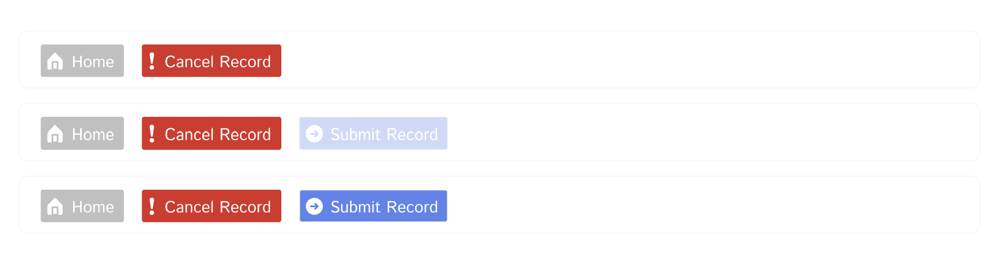
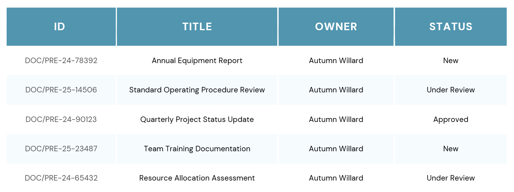
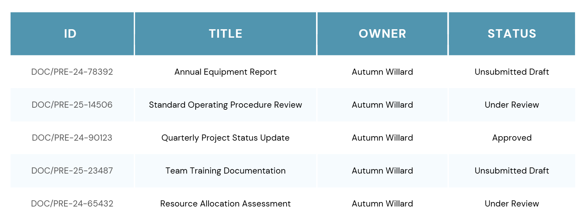
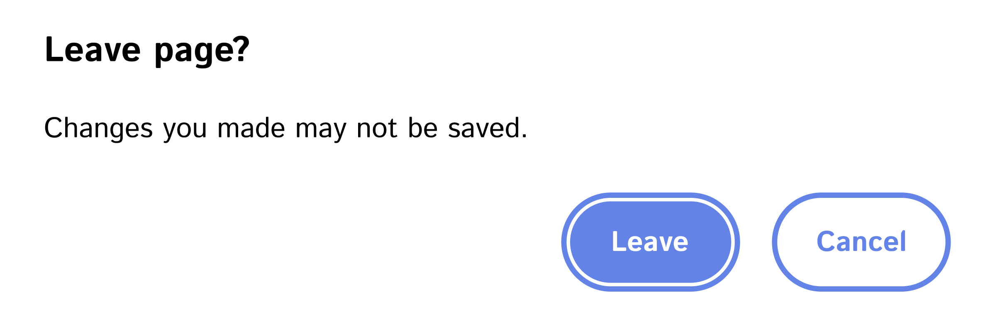

Abandoned Records
Redesigning document submission for users
Problem Statement
Note: This case study involves work on a proprietary enterprise system. Information has been generalized to protect confidentiality, and all images are recreations that demonstrate the core UX concepts without revealing the original system details.
In a critical enterprise document management system, users were unknowingly abandoning hundreds of records annually due to unclear submission indicators. This created a significant backlog of incomplete documentation and frustrated users who believed their work had been properly submitted. The issue not only impacted individual users but also created downstream problems for managers trying to track genuine document statuses and maintain accurate organizational records.
Constraints
This was a preexisting system. We had to operate within a strict budget and keep the changes as straightforward and minimal as possible. The developers working with us were also a shared resource with limited time to allocate to our department.
Process
To solve the problem of incomplete records, I began by using the test site and running through the system as a user. I continually asked myself, “If this were my first time using this, how would I know what to do next?”
Through this experience I realized that there was no indication to the user that a record was not ready to submit. In the original system, it was set up so that the button to submit did not appear until all the required fields had been filled out. As a new user, there was no indication that a button was meant to appear, and no message to show that you were leaving the record incomplete if you navigated to another page. In addition to all this, the record would be created and show a status of “New”, leading many users to assume that they had been successful in submitting their record.
Using the test environment, I switched from my admin role to a standard user role to experience the system's constraints firsthand. This role-based testing revealed several critical UX issues:
- No indication that a record was not ready for review
- Hidden submission buttons with no context for their appearance
- No warning when navigating away from incomplete work
- Misleading status labels giving false confidence of completion
Solution
Several changes were made to the system to prevent the unintended abandonment of incomplete records:
Submit Button Visibility
The button to submit the document was made visible and then greyed out until all the required information had been added.

Status Clarity
The status of the record was changed from "New" to "Unsubmitted Draft" to better communicate to the user the incomplete state of the record.


Navigation Warning
A pop-up message was added to the page warning the user that their changes may not save. This helped to prevent accidental clicks out of the incomplete record.

Results
The number of unintentionally abandoned incomplete records dropped from hundreds per year to nearly zero. We also saw a dramatic reduction in the number of helpdesk emails related to the submission process. Department managers reported significant improvement in their ability to track genuine document statuses, eliminating the noise of unintentionally abandoned records.